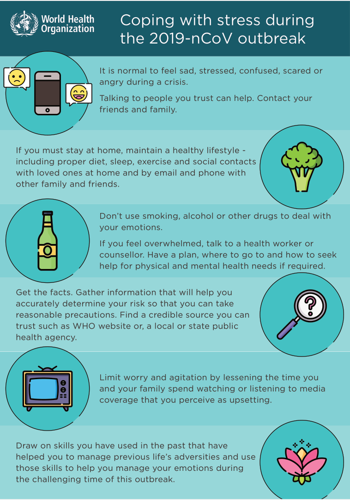

April 5, 2020
Don’t let the COVID-19 nightmare debilitate you!
Experts offer coping techniques to affected people, including those already afflicted with anxiety disorders or depression
© World Health Organisation
A bead of sweat appears at her temple and slowly slides down the side of her face. Her hands clutch a tissue in her lap. Her long fingernails pierce through it as her grip tightens further.
The droplet of perspiration keeps moving — now on her cheekbone, now in the hollow of her cheek. Reaching her jawline, it pauses. As if contemplating its next step.
And then, with an apparent jump, it lands on her hand. Now free. Sitting there as if waiting to evaporate or be cleared. Either of which will eventually happen. But she isn’t free. And her wait isn’t over.
This marketing manager of Bahadurabad has been battling anxiety on a daily basis. But the fight within herself has been raging more fiercely since the hustle and bustle of Karachi was choked off by the COVID-19 pandemic.
If life for her and countless others who’re afflicted with anxiety disorders or depression was difficult before, it has turned into a complete and utter nightmare now.
There’s also a banker of Gulshan-e-Iqbal who can’t stop biting his nails, and a schoolboy of Clifton who has frequent bellyaches, and a housewife of Nazimabad who keeps drifting in and out of a light sleep every night — each of them and many more like them is a nervous wreck these days.
If you’re one of them, do not seek to be invisible. Do not suffer in silence. Do not be afraid of society just because it keeps telling you, especially if you’re a woman, to pull yourself together.
Because there’s help available for everyone. There are people who not only understand what you’re going through but can also help you cope with it, if you allow them to.
People like Dr Farah Iqbal, who is a professor at the University of Karachi’s Department of Psychology. She believes it’s important to talk about anxiety disorders and depression right now.
A lot of people approach her for guidance through phone, email and WhatsApp. Her students also forward her questions of their contacts. And she helps them all however she can.
Then there are people like Dr Nargis Asad, who is an associate professor, the interim chair and a consultant clinical psychologist at the Aga Khan University’s Department of Psychiatry.
And there’s also Dr Asha Bedar, who has a PhD in clinical psychology from the University of Melbourne, and has been practising for over two decades, working with groups and individuals, including professionals.
Real issues
But how does one go about explaining anxiety disorders to people who don’t see them as real health issues? You point them towards reliable resources, says Dr Nargis.
“Anxiety and panic disorders are truly debilitating, and quite commonly, people may not take them as real issues. In such cases, providing them simple educational material from authentic resources might help, such as expert talks, and referring them to credible social media resources like the AKUH’s Facebook Live sessions, etc.”
As for Dr Asha, who has been working around mental and emotional health issues, trauma, and abuse and relationship issues, particularly around violence against women and children, she thinks it’s a really important thing to talk about because there’s often a lot of confusion.
“When people think that it’s a mental health issue, they think it’s all in the head and it’s not real. All of these issues, whether it’s panic or anxiety, have real implications for health.”
She says that for a lot of people, when they’re experiencing anxiety, it has a very direct effect on their health: there’s a lot of self-neglect, and their appetite, exercise routine and sleep can be affected, so very real health issues can come about from not getting adequate rest or from having unhealthy eating habits.
“But apart from that, very often we also find with a lot of mental disorders that there are chemical imbalances that can be caused because of them, and that’s a very real concrete issue, which is why they’re actually disorders. So, it’s not something that a person imagines. It’s not something that you can just snap out of.”
She says it’s important that people know that the panic that a person feels because of their panic or anxiety disorder is very real to them, and for a lot of them the symptoms can be very physical as well, like palpitations, improper breathing, trembling, sweating or shivering. “Very often people think that they’re actually having a heart attack.”
So, of course, it’s a health issue and it can also be debilitating, she says. “I think that’s one of the main things around mental health that when you’re in that state, you’re often not able to function properly. Your day-to-day routines or day-to-day functions, you’re not able to perform those because that anxiety takes over.”
Rare situation
Won’t the coronavirus outbreak have aggravated their conditions? “People who are already diagnosed with clinical disorders run the risk of exacerbation and worsening of their symptoms; relapses in case of some severe mental disorders,” says Dr Nargis.
And Dr Asha points out that a lot of the people who didn’t have anxiety before are now experiencing it for the first time. “[But] people who were already prone to anxiety or who had full-blown anxiety disorders of some sort or even depression, it’s become much worse [for them] because there is a rare situation out there.”
And it’s a very real anxiety, she says. “It’s a very real threat not just in terms of what can happen around the world and in terms of the actual disease, but I think there are also a lot of related issues.”
She gives the examples of people’s financial conditions and overall routine lives being affected by the lockdown that was ordered by the government to stop local transmission of the virus.
“There’s a lot of anxiety around that. It has changed entire lifestyles, and it’s only been a few days and nobody really knows how long it’s going to go on for.”
Uncertainty of course is creating a whole new level of anxiety, she says, and even people who’re taking this as a break and enjoying more time at home know that all of this is temporary.
“At some point, the implications of this [will emerge], if they haven’t already. For some people the implications are already real, but even when they aren’t real, everybody knows that after some point, if this situation is prolonged, it will create problems. That anxiety is very real... it’s real for everyone.”
But if you’re already someone who suffers from anxiety or panic or from depression, this can actually become quite severe, she says. “I’m dealing with quite a few clients who are talking about this. They’re talking about sleepless nights. They’re talking about not being able to eat properly or about eating a lot more and unhealthy food, because that’s a reaction sometimes to anxiety and depression, both overeating and undereating.... It’s also a coping mechanism. It’s also a way to escape unpleasant situations.”
One feature of anxiety is just sort of worrying about things a lot, she says, sometimes irrationally. “When you’re anxious, these worries are to an irrational extent, [but] now with this whole crisis, they become much more pronounced.”
A lot of them are much more worried about these things, she says. “And if it was interfering in their lives before, one can imagine how much these fears would’ve taken over their whole lives now because everyone around them is also becoming really worried. So, the fear is just a lot greater.”
She’s dealing with clients who’re saying they do nothing all day but think about the germs that are somehow entering their house because someone’s walked by or someone’s entered the house or because the windows are open.
“So, a lot of them are resorting to very extreme measures to somehow keep the virus out. And, of course, we all need to take precautions. And, of course, everyone needs to be careful at this point — and that’s the whole point of the lockdown. But for these people it has become a very extreme kind of threat and they’re doing everything that they possibly can that they think is keeping themselves and their family safer.”
She points out that the threat is always going to be there no matter what they do, but these extreme measures are actually interfering in their lives so much that it’s damaging other parts of their lives, like their relationships.
“Of course, a lot of it is because everyone is talking about it. This constant talk! Even children are feeling that... whether it’s the news or people at home... of course, we need all of the people to know what they need to do to take care of themselves, but there’s very little other conversation going on, whether it’s the media, whether it’s people talking on the phone or even social contact through video calls, etc.”
She thinks people aren’t getting a rest from it at all, and that’s also one of the reasons for the worsening of anxiety symptoms for a lot of people over the last few days, because usually when you experience anxiety, there are still plenty of distractions, and even though there still are, there’s a constant flow of information, so there’s no break.
It’s normal
“I think it’s important to accept — pretty much for everyone — that a certain level of anxiety will be there,” says Dr Asha. “It’s kind of hard to come up with anything that ensures that you’re not going to be anxious. There’s nothing, because there is a real situation out there and the worry is very concrete.”
It’s just important to accept that, she says, as it’s one of those situations where even accepting our own fears and even helplessness is something that we’re all going to have to live with for a while, until we know what’s happening.
She points out that there will be fear, negativity and at times self-pity, because a lot of people would’ve had some expectations, hopes, dreams or goals, but now everything has come to a standstill.
“There are others who were probably not going through a good time and are thinking this is even worse... feeling ‘Why me? Why do bad things happen to me?’ So, all of these feelings are going to come from time to time. It’s natural... it’s important to also know that this is normal in this particular situation.”
Limit negativity
So, what else should they do to manage their conditions so that they’re not debilitating? “If they are already under treatment, they should adhere to their suggested treatment,” says Dr Nargis.
On the behavioural side, she suggests keeping proper sleep-wake schedules as well as healthy routines that include exercise, family time, enjoyable activities, talking to a trustworthy person and practising spirituality or religion.
“More importantly, avoid constant media coverage of the pandemic, avoid talking about it in social circles, avoid mass forwarding and paying attention to social media messages — some of them may not be reliable.”
She also suggests maintaining the usual routines as much as possible and staying in touch with health professionals. For instance, she says, they can avail themselves of the AKUH’s teleclinics.
As for Dr Asha, she says it’s alright to allow yourself to vent every now and then, and it’s important also to have limits around how much negative information we allow ourselves to think about, talk about and expose ourselves to.
“Different things will work for different people because the impact is very different for different people too... for some people focusing on the temporary... positives in a way is what’s helping them get through, particularly if there are no major sort of financial concerns that are attached to this whole situation.... It’s also about making the best of a situation where you really don’t have a lot of choices in terms of what you can do externally.”
She suggests finding ways to reduce your anxiety, and that does include doing positive things, which is what she would say to anyone with depression and anxiety.
“This situation of course is different because everyone’s facing the same scenario, but the basic principle is still the same: finding ways, whether it’s TV shows, whether it’s playing games at home, whether it’s music — whatever makes you tick.”
Structured life
For some people whose lives are too regimented, says Dr Asha, it might actually be helpful to just let go of structure and routine for a little bit and kind of just enjoy that slow, easy, unstructured life.
“But for other people, those with anxiety and depression, it’s actually really helpful to have that structured life to try and maintain a routine. The good thing is that the routine can be much more in your control so it’s not dictated by office hours or by school timings.”
It’s also important to remind yourself that you still have to lead your life, she says, and to catch yourself when you feel that you’re becoming too anxious and worrying too much about even things like how do I keep everything clean, because there’s a limit to it.
“You could be scrubbing and cleaning all day and it still wouldn’t get rid of all the germs around us, and I think we’re built in such a way that our immune systems can take some germs.”
She says that one of the major issues with anxiety is that people forget they can’t control everything. “You can’t control every situation. You can’t control every germ. You can’t control every bit of disorganisation.... go with the flow and accept your own limitations and focus more on your own strengths, on your own relationships.”
Stay positive
“If you’re in a home where there is conflict, where there is abuse, where there are relationship issues, then in this current situation where you’re confined to that space can be very, very hard too,” says Dr Asha.
In that situation, she adds, it’s important for people to focus on things that they can do to keep themselves staying positive, focusing on their own individual hobbies and avoid getting into confrontational situations. “Safety becomes really important at this particular time, particularly for people who are in situations where there is abuse.”
Take control
Dr Asha suggests making use of this time to focus on oneself. She says there’s no harm in thinking about the future, but she warns against getting attached to those plans or becoming so dependent on them that they fall apart when things don’t go accordingly, because things are unpredictable.
“So either you plan really long-term, because we don’t know how long this will go on, or you plan small chunks — the next month, the next two weeks, the next week, day-to-day — because we have a little bit more control in that... and it’s literally one of the situations where you pretty much have to go [from] day to day.”
First published in The News International